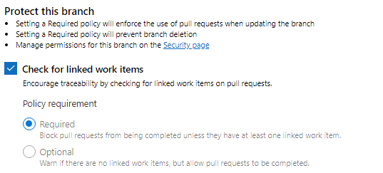
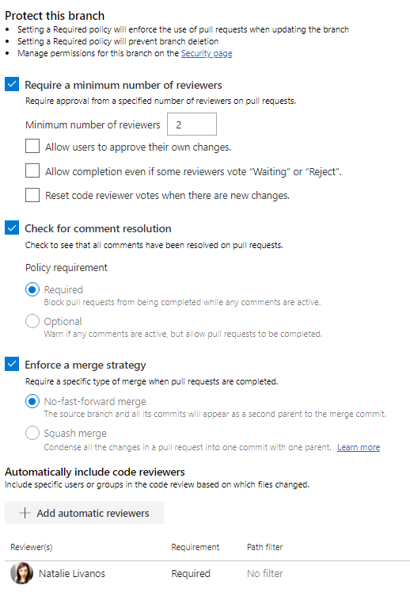
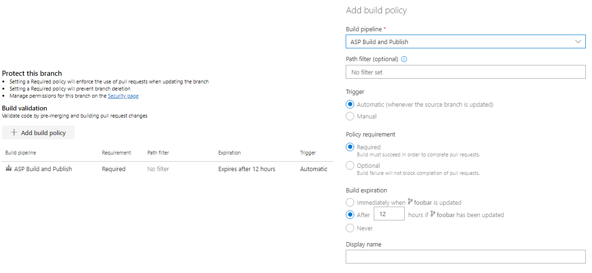
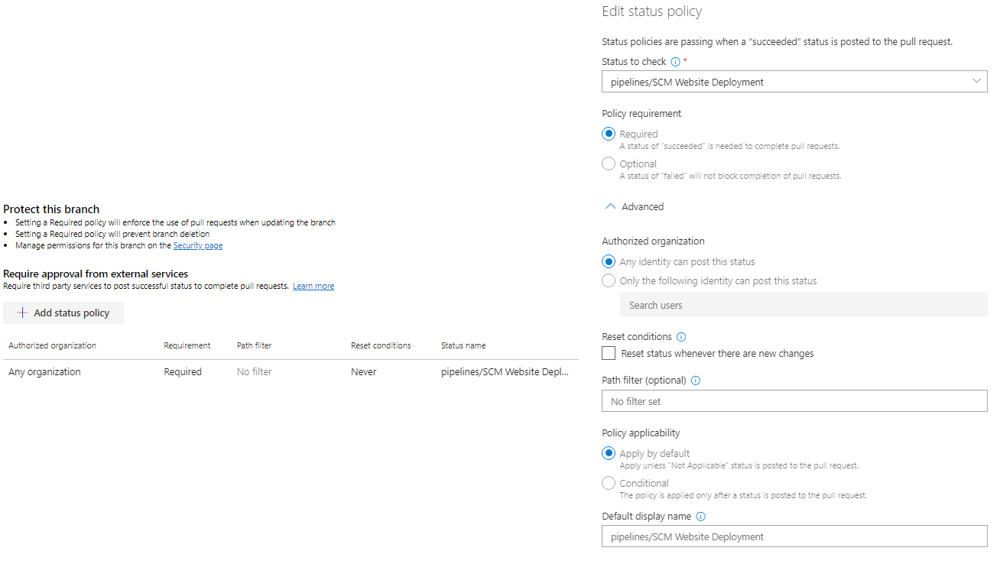

Working With Azure DevOps
Session 3: Advanced Git
Presented by Natalie LivanosRecap
- Git remotes & upstreams
- Branching
- Merging and Pull Requests
- Merging options and strategies
- Branching strategies
More Git
Stash Your Changes
$ git stash
Saved working directory and index state WIP on master: 259879b Init
$ git checkout -b chg1
Switched to a new branch 'chg1'
$ git stash apply
On branch chg1
Changes to be committed:
(use "git reset HEAD <file>..." to unstage)
new file: 1.txt
new file: 2.txt
new file: 3.txtWhat's Changed?
$ git diff
diff --git a/foo.bar b/foo.bar
index a5fd404..b68c5a6 100644
--- a/foo.bar
+++ b/foo.bar
@@ -1,2 +1,3 @@
Hello world again
Hello hello
+This is new text to diff!Amend A Commit*
$ git commit -m "Wrong message"
[chg2 316f961] Wrong message
1 file changed, 0 insertions(+), 0 deletions(-)
create mode 100644 foo.foo
$ git commit --amend -m "Right message"
[chg2 22c201a] Right message
Date: Mon Apr 20 11:55:03 2020 -0400
1 file changed, 0 insertions(+), 0 deletions(-)
create mode 100644 foo.foo
Revert a Commit
$ git revert 22c201a
[chg2 855fe82] Revert "Right message"
1 file changed, 0 insertions(+), 0 deletions(-)
delete mode 100644 foo.foo
Cherry-Pick A Commit
$ git cherry-pick b043167
[chg1 f2ec1a1] Add Hello World
Date: Mon Apr 20 12:01:18 2020 -0400
1 file changed, 0 insertions(+), 0 deletions(-)
create mode 100644 hello.world
Revert a File to a Previous Version
$ git checkout 25511e3a foo.barThrow Out All Changes*
$ git reset --hard
HEAD is now at f2ec1a1 Add Hello World
$ git clean -f
Removing add.txt
$ git status
On branch chg1
nothing to commit, working tree clean
Force Push*
$ git push --forceAdvanced Git
The Three Trees
| Working Tree | Staging Index | HEAD |
|---|---|---|
| Mirrors CWD - "sandbox" | Proposed next commit | Last commit |
| Modify files | git add |
git commit |
git status in red |
git status in green |
git status "nothing to commit" |
Binary Files
Don't compress well
If they change often, they make repos very large very quickly
Avoid putting in git repos as much as possible (use artifact repos or package feeds like NuGet or Artifactory)
.gitignore
## Ignore Visual Studio temporary files, build results, and
## files generated by popular Visual Studio add-ons.
##
## Get latest from https://github.com/github/gitignore/blob/master/VisualStudio.gitignore
# User-specific files
*.rsuser
*.suo
*.user
*.userosscache
*.sln.docstates
# User-specific files (MonoDevelop/Xamarin Studio)
*.userprefs
# Mono auto generated files
mono_crash.*
# Build results
[Dd]ebug/
[Dd]ebugPublic/
[Rr]elease/
[Rr]eleases/
x64/
x86/
[Ww][Ii][Nn]32/
[Aa][Rr][Mm]/
[Aa][Rr][Mm]64/
bld/
[Bb]in/
[Oo]bj/
[Ll]og/
[Ll]ogs/
# Visual Studio 2015/2017 cache/options directory
.vs/
# Uncomment if you have tasks that create the project's static files in wwwroot
#wwwroot/
# Visual Studio 2017 auto generated files
Generated\ Files/
# MSTest test Results
[Tt]est[Rr]esult*/
[Bb]uild[Ll]og.*
Used to prevent putting files in a repo
Typically, don't add compiled code and folders to the repo - these will be in .gitignore
.gitconfig
[user]
email = natalie.livanos@email.com
name = Natalie Livanos
[filter "lfs"]
process = git-lfs filter-process
required = true
clean = git-lfs clean -- %f
smudge = git-lfs smudge -- %f
[https]
proxy = http://myproxy.com
[credential]
helper = manager
Local (repo), Global (User), and System hierarchy
git config [-System][-Global] category.sub [value]Refs
What is a Ref?
A ref is a pointer to a commit's SHA1 hash
Helps give readable names to points in Git history
Stored in .git/refs directory in flat files
Sound familiar?
Yes - a branch is a ref
Branch's target moves as work is added to it
HEAD
Special symbolic ref which points to the currently checked out branch or commit (detached head)
Changed when git checkout is issued
Tags
git tag [TAG-NAME] [GIT-OBJECT]
Similar to a ref - points to a commit
Can think of it as a branch that never advances
Lightweight tags are just refs that point to a commit
Annotated tags are similar to commits - have "tagger", date, tag message
(Tags can also point to raw "git objects" rather than strictly commits)
Azure DevOps Git Configuration
Creating A New Repo
When a project is created, one Git repo with name of Project is already created
One project can have many Git repos
Branch Policies
Protect branches from arbitrary changes without a pull request
Setting a Required policy will enforce the use of pull requests when updating the branch
Setting a Required policy will prevent branch deletion
Work Item Policies
Pull Request Policies
Build Validation
Service Policies
Branch Security
Prevent specific people from modifying a branch
Can also apply to branch folders (requires CLI access)
Git Plumbing
.git Folder
Git database contained here
All working files constructed by objects here
Deleting this removes the git repo
Initializing A Repo

Creating A File
Nothing changes!
Staging A File

Committing A File

Git Plumbing Summary
- Git does not store deltas (they're calculated on fly). Git stores entire files as blobs.
- 4 types of objects in .git folder:
- Blobs - raw files
- Trees - point to multiple blobs (think trees/dirs)
- Commits - snapshot metadata + point to trees
- Refs - point to something else usually a commit (think branches)
Putting It All Together
Goal
- Put this presentation under Git source control
- Take this presentation and put it in Azure DevOps
- Show what development looks like with a Git repo out of the box
- Configure branch policies to support Release Flow branching strategy
- Create branch security rules to support Release Flow
- Show what development looks like with this new configuration
Step 1
Initialize a Git repo for this presentation
Step 2
Sync this Git repo with Azure DevOps
Step 3
Test current development process
Step 4
Configure branch policies
Step 5
Configure branch security
Step 6
Review development process with changes
Questions?
Now What?
Return to the Presentations Home Page